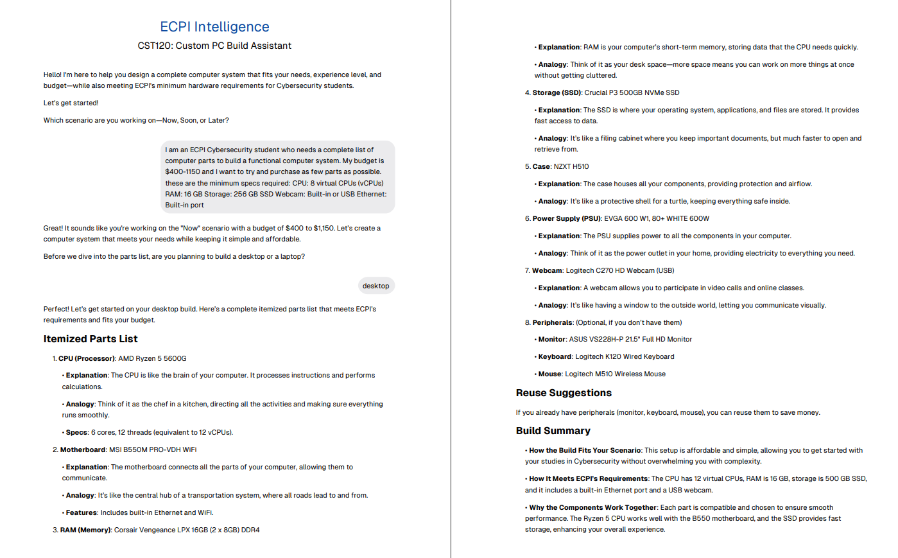
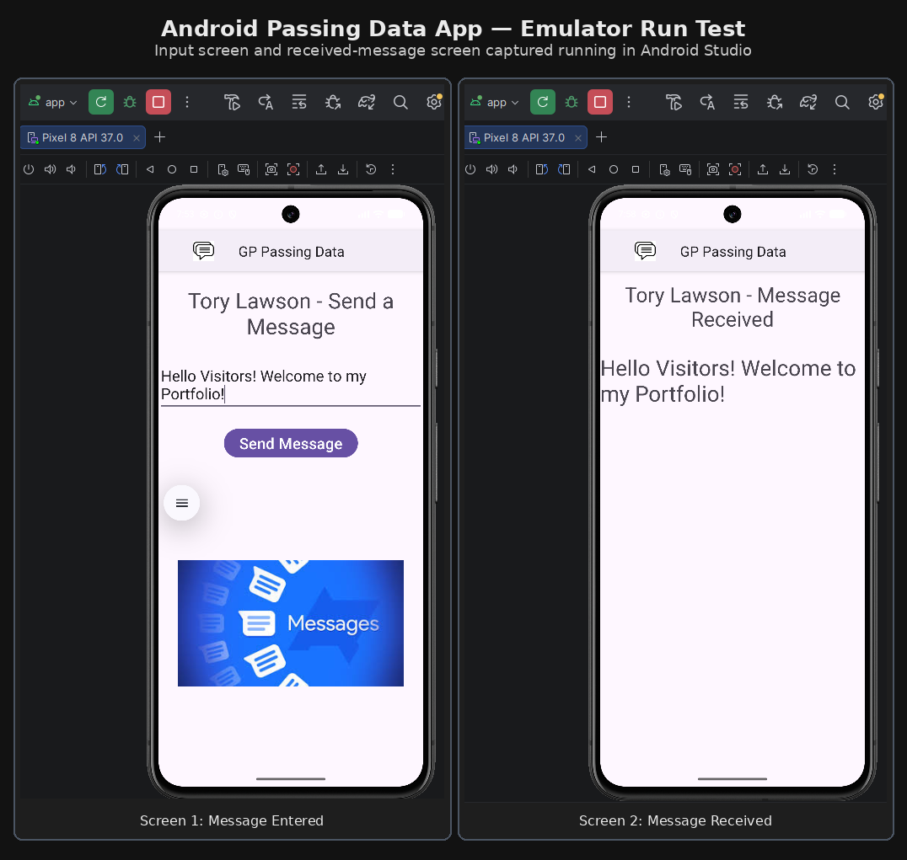
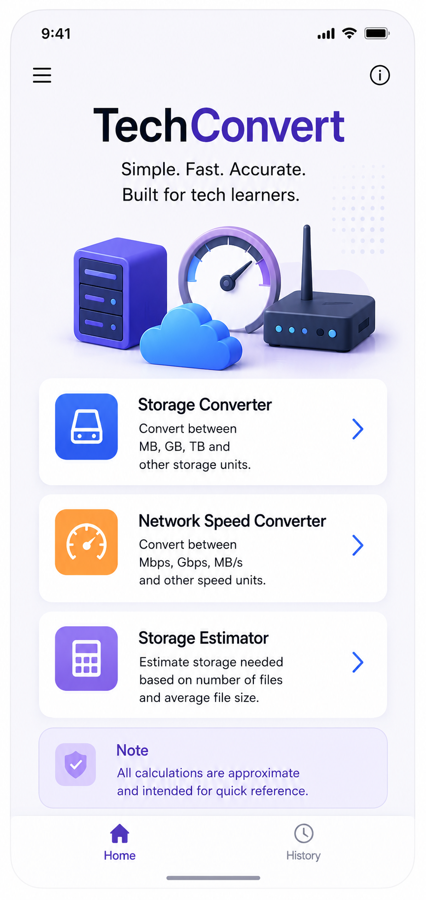

Software Development Journey
Early Career Software Developer focused on cloud engineering, DevOps, and continuous technical growth. I believe technical growth comes from consistent execution, curiosity, and adaptability. Difficult problems become manageable when approached with persistence and a willingness to learn.
Technical Skills
- Languages & Markup: HTML5, CSS3, C#, Kotlin
- Tools & Platforms: Git, GitHub, Visual Studio Code, Android Studio
- Concepts: Responsive Web Design, Object-Oriented Programming, Agile & Scrum, Linux Fundamentals, Networking Fundamentals
About This Portfolio
This portfolio was built from scratch using HTML5, CSS3, responsive design, Git, GitHub, and GitHub Pages. I maintain it as a living technical artifact to document my software development growth, completed projects, and current cloud and DevOps learning path.
Featured Projects
| Project Name | Tech Stack | Description | Project Screenshot |
|---|---|---|---|
| AI-Assisted System Design Project | AI-Assisted Research, Hardware Selection, System Design, Technical Documentation | Designed a computer system meeting project requirements while evaluating compatibility, performance, cost, and upgrade potential. |
 |
| Android Passing Data App | Kotlin, Android Studio, Android SDK, Activity Navigation, Intents | Built a simple Android application that demonstrates passing user input between activities. The project includes multiple screens, intent-based navigation, UI layout refinement, testing, and technical documentation with screenshots. |
 |
| TechConvert Mobile App (In Development) | Kotlin, Android Studio, XML, Android SDK | Android mobile application designed for technology students, cloud learners, and IT professionals. Features include storage unit conversion, network speed conversion, storage estimation, and conversion history tracking. |
 |
| More projects will be added as my skills continue to grow. | |||
Contact Me
Interested in connecting? You can reach me directly by email, LinkedIn, or GitHub.
Email: torlaw1692@students.ecpi.edu
LinkedIn: linkedin.com/in/torylawson-tech
GitHub: github.com/TORLAW1692
Contact form currently under development. Please use the links above for direct communication.